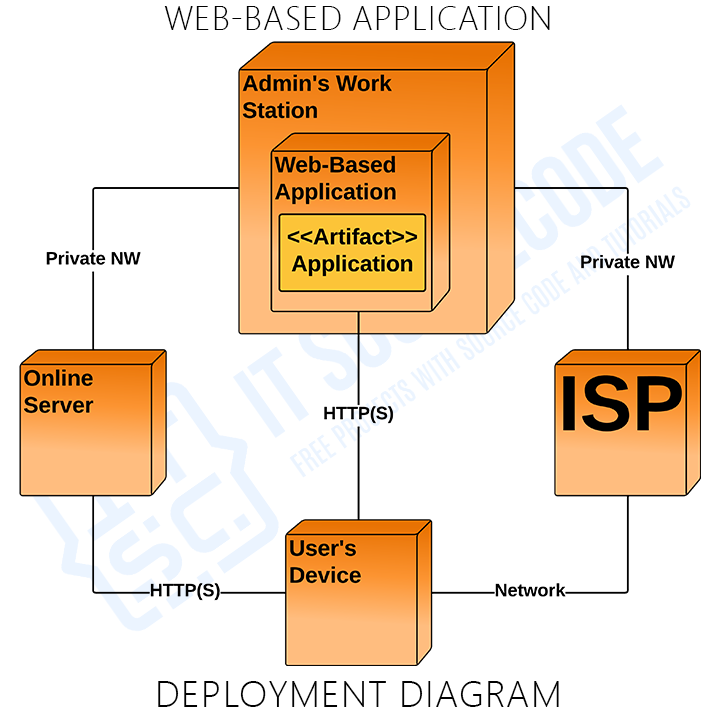

In web development, "deployment" refers to the process of making a web application or website available for use on the internet.
It involves moving your code from a development or testing environment to a production environment where it can be accessed by users.
Here are some key terms and concepts related to deployment:
1. Production Environment
- Definition: The live environment where your application or website runs and is accessible to end-users.
- Purpose: It is the final version that users interact with, so it's crucial for this environment to be stable, secure, and fully
optimized for performance.
- Example: When you visit a website like Google or Amazon, you’re interacting with their production environment.
2. Staging Environment
- Definition: A replica of the production environment used for testing changes before they are deployed live.
- Purpose: It allows developers and testers to validate changes in a controlled environment that mimics production, helping to catch
bugs or issues before they impact users.
- Example: A company might push new features to staging first to ensure everything works as expected before deploying to production.
3. Continuous Deployment (CD)
- Definition: An automated process that deploys code changes to the production environment automatically after they pass through
the necessary testing phases.
- Purpose: It minimizes manual intervention, accelerates the release of new features, and helps maintain a consistent deployment
flow.
- Example: After a developer commits code, CI/CD pipelines automatically test and deploy it to production without requiring manual
approval.
4. Continuous Integration (CI)
- Definition: A practice where developers frequently merge their code changes into a shared repository, which triggers automated
builds and tests.
- Purpose: CI helps catch errors early by integrating changes regularly, making it easier to detect and fix bugs quickly.
- Example: A CI tool like Jenkins or GitHub Actions can automatically test new code every time it's pushed to the repository.
5. Build
- Definition: The process of converting source code into an executable format or preparing the code by tasks like minification,
bundling, and transpiling.
- Purpose: Builds ensure the code is optimized, combined, and transformed as needed before it runs in production.
- Example: Webpack is often used in JavaScript projects to bundle and minify code before it’s deployed.
6. Version Control
- Definition: A system that tracks changes to the codebase, allowing multiple developers to work simultaneously while maintaining
the code’s history.
- Purpose: Version control systems like Git help manage code changes, enable collaboration, and provide a way to revert to previous
versions if needed.
- Example: GitHub, GitLab, and Bitbucket are popular platforms that provide Git-based version control.
7. Rollback
- Definition: The process of reverting to a previous version of the application in case a new deployment causes issues.
- Purpose: Rollbacks provide a quick way to restore stability if something goes wrong during or after deployment.
- Example: If a bug is detected in a new feature, DevOps engineers can roll back the deployment to the last stable version.
8. Server
- Definition: A computer or system that provides resources, data, services, or programs to other computers, known as clients, over
a network.
- Purpose: Servers host the website or application, handling requests from users, such as serving web pages or running backend
processes.
- Example: Web servers like Apache, Nginx, or cloud servers like AWS EC2 handle the deployment of web applications.
9. Load Balancer
- Definition: A tool that distributes incoming traffic across multiple servers to ensure that no single server becomes overwhelmed,
enhancing performance and reliability.
- Purpose: Load balancers help maintain high availability and responsiveness of your application.
- Example: AWS Elastic Load Balancing (ELB) distributes incoming traffic across multiple instances of your application.
10. Containerization
- Definition: Packaging an application and all its dependencies into containers (like Docker) to ensure consistent deployment
across various environments.
- Purpose: Containers isolate the application from its environment, making it portable and reducing compatibility issues.
- Example: Docker allows developers to run their applications inside containers that work the same on any server, whether it's
local, staging, or production.
11. Hosting
- Definition: The service that provides the infrastructure to make your website or application accessible to users on the internet.
- Purpose: Hosting providers offer the hardware, software, and network resources necessary for deploying applications, ranging from
simple shared hosting to advanced cloud-based solutions.
- Example: Amazon Web Services (AWS), Google Cloud Platform (GCP), and Microsoft Azure are popular hosting providers.
12. DNS (Domain Name System)
- Definition: The system that translates human-readable domain names (like example.com) into IP addresses that computers use to
locate servers.
- Purpose: DNS makes it easy for users to access websites without remembering numerical IP addresses.
- Example: When you type “google.com” into your browser, DNS translates it into the IP address of Google’s servers, directing your
request to the correct location.